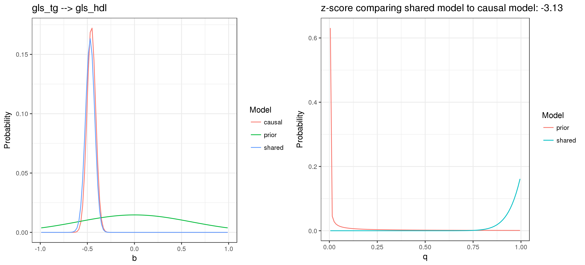
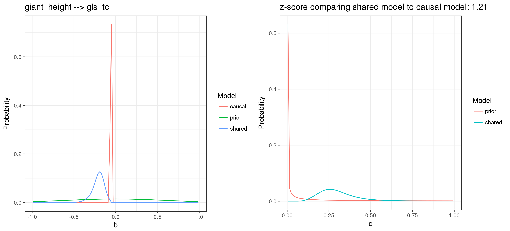

Pairs of GWAS traits
Jean Morrison
2017-12-22
Introduction
We ran CAUSE on pairs of 16 GWAS traits. For each pair, we looked at effects going in both directions. The 16 traits along with the consortia supplying the summary statistics and the abreviation used in plots below are:
- Coronary artery disease; CARDIOGRAM; cad
- Lumbar spine bone denisty; GEFOS; ls
- Femoral neck bone denisty; GEFOS; fn
- HDL cholesterol; GLS; hdl
- LDL cholesterol; GLS; ldl
- Total cholesterol; GLS; tc
- Triglycerides; GLS, tg
- Alzheimers disease; IGAP; ad
- Age at menarche; Reprogen, aam
- Type 2 diabetes, DIAGRAM; t2d
- Body mass index; GIANT; bmi
- Height; GIANT; height
- Crohns disease; IBDgenetics; cd
- Ulcerative colitis; IBDgenetics; uc
- Fasting glucose; MAGIC; fg
- Schizophrenia; PGC; scz
Our analysis pipeline consists of the following steps:
- Identify a set of SNPs available in all studies. Limiting ourselves to this set is mostly for convenience later.
- From the set identified in 1, choose a set of SNPs with pairwise \(r^2 < 0.1\). Using this set to estimate joint distributions of direct effects is substantially faster than using all SNPs.
- For each trait, fit ASH using the set of SNPs in step 2.
- For each pair of traits, estimate the joint distribution of direct effects and \(\rho\) assuming \(b = q = 0\). This step also uses the LD pruned set of SNPs from step 2. The joint dsitribution is estimated as a mixture of bivariate normal distributions. The pairs of variances considered are taken from the ASH fits in step 3.
- For each pair, run CAUSE using the estimates from step 4.
Results
The figure below shows posterior medians and 90% credible intervals for \(b\) and \(q\). \(q\) is shown on the \(x\)-axis and \(b\) is shown on the \(y\)-axis. For improved clarity, the traits are divided into four categories based on the posterior median of \(q\). The range of the median of \(q\) is given in the grey header. Note that the range/scale of the axes differs between plots.
Points are colored based on \(-log10(p-value)\) for the test compairing the ELPD of the shared model to the ELPD of the causal model. The credible intervals shown are for the shared model. The negative log \(p\)-value was capped at 6 to preserve the scale. However, the true \(p\)-values for tc -> ldl (total cholesterol causally associated with ldl cholesterol) and ldl -> tc (ldl cholesterol causally associated with total cholesterol) are \(9.7\cdot 10^{-27}\) and \(2.8\cdot 10^{-53}\) respectively.
The matrix below is another way of visualizing these results. This plot uses the same categories for the posterior median of \(q\) as used above. Here the categories are indicated by color. Each point is an upward pointing triangle if the posterior median of \(b\) is positive and a downward pointing triangle if the posterior median of \(b\) is negative. For pairs with larger posterior values of \(q\), the points contain two numbers. The top number is the posterior median of \(q\). The bottom number is the \(p\)-value associated with the \(z\)-score comparing the causal and shared models.
I will discuss these results in more detail below.
Mutual pairs
There are some pairs of traits where relationships in both directsions show strong evidence for a causal relationship or a very high degree of sharing. These pairs are
- ldl and tc
- fn and ls
- t2d and fg
- cd and uc
- tc and tg
- hdl and tg
HDL, LDL, TC, and TG
Our results show that these four traits are highly interconnected. This is expected, but this analysis still provides some interesting information. These results also highlight an interesting case for our method. In particular, they show that it can be hard to disentangle causal relationships from very tight co-regulation.
Our results indicate that there is almost complete overlap between the variants that influence LDL cholesterol and the variants that influence total cholesterol. This can be seen in the posterior paramter distributions for ldl->tc and tc->ldl below.
In both directions, the posterior estimate of \(q\) is close to 1 and the causal model gives a much better ELPD, providing evidence that \(q=1\) is a better fitting model than \(q\) close to 1. Since total cholesterol is the sum of LDL and HDL, we expect to see the ldl -> tc effect. Finding also a tc->ldl effect is interesting.
Looking further at the results for hdl->ldl and ldl->hdl we find little evidence of an hdl->ldl effect (\(q\)-median: 7e-3, 90%CI 7e-4 to 0.39) but some evidence that many LDL variants effect HDL in a consistant manner (\(q\)-median: 0.53, 90%CI 2e-3 to 0.96).
The wide posterior distribution for \(q\) for the ldl->hdl effect and a moderately significant \(z\)-score suggest that the data are consistant with a range of models. The data are fit about as well by a model in which increases in LDL causally lower HDL and a model in which there is a shared regulatory pathway raising LDL and lowering HDL that accounts for a significant proportion of LDL effect SNPs.
We can imagine dividng variants into three groups: those that directly effect HDL, those that directly effect LDL, and those that influence total cholesterol. One interpretation of our results is that most SNPs that effect total cholesterol act through effects on LDL cholesterol. Some of these may simultaneously increase LDL and decrease HDL. However, there are many SNPs that influence HDL but not LDL. One slight inconsistancy is that we find evidence that all of the SNPs influencing HDL also influence total cholesterol and that most of the SNPs influencing total cholsesterol influence LDL. However, we don’t see that most of the HDL snps infulence LDL. This could be explained by more complicated regulation of LDL and HDL involving unmeasured factors or if there are not very many HDL effect SNPs.
We find strong mutual relationships between all three of LDL, HDL, and TC with triglycerides. Our results suggests that the data is consistant with a model in which increased triglycerides causally lower HDL, increase LDL and increacease TC. We also have evidence for strong effects in the other direction of TC and HDL on triglycerides. The relationship between LDL and triglycerides is somewhat weaker. We estimate that there could be many LDL SNPs that do not effect triglycerides.
These conclustions are based mostly on high posterior medians for \(q\) in all six comparisons, however the \(z\)-score comparing the “nearly causal” posteriors with the causal model is only significant in the tg->hdl case atnd tc->tg case. One interesting question is whether we ever expect to find a pair of traits that share nearly all of their genetic variants but are not causally linked. This could be the case for tightly co-regulated biomarkers but may be less expected for a gene expression - disease outcome pair.
Posteriors for cholseterol traits acting on triglcerides:
Posteriors for triglycerides acting on cholseterol:

All four of these traits (LDL, HDL, TC, and TG) have evidence of sharing or co-regulation with CAD risk. Our results are consistant with a causal model for TG, LDL, and TC on CAD but suggests that co-regulation is a better explanation for the sharing between HDL and CAD.
Influences on CAD
There are three traits with posterior median for \(q\) above 0.9 for CAD. These are triglycerides, total cholesterol, LDL. As discussed above, these theree traits all appear to have a high degree of mutual sharing of genetic factors so it is difficult to determine if we are observing one or multiple causal relationships. Posterior distributions for these three effects are show below.

In addition, height, HDL cholesterol, and BMI have posterior medians for \(q\) between 0.5 and 0.9.
These results suggest that there may be a protective effect of height on CAD. However, broad posteriors and inconclusive \(z\)-scores for height->cad and hdl->cad mean that these trait pairs are consistant with a wide range of models. The effects with HDL and BMI are more consistant with co-regulation or the sharing model. These suggest that many SNPs that raise HDL may be protective for CAD and that some SNPs that increase BMI may also increase risk of CAD.
Traits with partial sharing with BMI
We found no strongly causal associations wtih BMI but there are several traits with evidence for shared genetic factors.
Many of the genetic factors that influence BMI appear to also influence CAD, fasting glucose, HDL cholesterol and triglycerides. Plots of posteriors for these analyses are shown below


In all of these cases, the \(z\)-score indicates that the parital sharing model is better than the causal model.
Interestingly, we don’t see any evidence of an effect of BMI on LDL or total cholesterol.
There are five traits, triglycerides, total cholesterol, LDL cholesterol, height and schizophrenia, with higher posteriors for \(q\) when we look at their effects on BMI. We estimate that a significant proportion of the variants influencing these traits also influence BMI. Posterior estimates are shown below.
The results for height and for schizophrenia on BMI are particularly interesting. These results suggest that about half of height associated variants also decrease BMI (\(q\)-mdeian: 0.48, 90%CI: 0.34 to 0.72). They also suggest that some variants that increase risk of schizophrenia act through a shared mechanism that lowers BMI (\(q\)-median: 0.22; 90% CI 3e-3 to 0.90).
Traits with partial sharing with Schizophrenia
In addition to the effects with BMI described above, our results suggest that some schizophrenia associated SNPs may be involved in shared pathways that increase risk of ulcerative colitis and Crohns disease and increasing HDL. The relationship between schizophrenia and and ulcerative colitis is strong enough that we might consider it consistant with a causal relationship. We don’t see evidence for a causal relationship of UC on schizophrenia. A (brief) literature search revealed literature indicating a causal relationship between SCZ and UC. I did find this study which ascertained individuals with coeliac disease, UC and Crohn’s disease and found no association with schizophrenia.
Traits with partial sharing with height
SNPs effecting height appear to be involved in pathways with effects on many other traits including HDL, LDL, TC, TG, CAD and BMI. The posterior median for \(q\) in the height->CAD analysis is 0.89 and the \(p\)-value comparing this model with the causal model is 0.018 suggesting there may be causal relationship between height and decreased CAD risk.
This article from NEJM indicates that an association between the two is well established. This paper also looks for genetic evidence of a height->CAD relationiship usign two methods. 1) They ascertain the top 180 height SNPs from the GIANT consortium using a threshold of \(p < 5\cdot 10^{-8}\). For each SNP they estimate \(\beta_3\), the ratio of SNP effect on height and SNP effect on CAD. They then use inverse-variance–weighted random-effects meta-analysis to combine the \(\beta_3\) estimates. 2) Using individual level CAD data, they estimate the association between height genetic risk score and CAD. Height genetic risk scores are calculated by multiplying allele dosage estimates by effect sizes and summing over SNPs. Association between risk score and CAD uses quartiles of risk score rather than continuous risk score. The first analysis yielded a significant result. The seond analysis showed a reduced risk of CAD for individuals in the highest quartile of genetic height score. Because this study uses (in part) the same data we have used, it is not exactly a replication but it uses different methods to draw similar conclusions.
Posteriors for the relationship of height with LDL, HDL, TC and TG are below:

AAM and AD
Interstingly, the posterior median for \(q\) looking at the ad->aam relationship (proportion of Alzheimers variants that act on age at menarche) is 0.26 (90% CI: 2e-3 to 0.73). While this relationship is not causal it may indicate an interesting pathway underlying Alzheimers risk.
A literature search yielded thist article which describes an association between late age at menarche and increased risk of Alzheimers. However, our results suggest that a subset of Alzheimer’s risk SNPs lower age at menarche. We do not find that a substantial proportion of AAM SNPs influence AD risk.
Session information
sessionInfo()R version 3.4.1 (2017-06-30)
Platform: x86_64-pc-linux-gnu (64-bit)
Running under: Ubuntu 17.04
Matrix products: default
BLAS: /usr/lib/libblas/libblas.so.3.7.0
LAPACK: /usr/lib/lapack/liblapack.so.3.7.0
locale:
[1] LC_CTYPE=en_US.UTF-8 LC_NUMERIC=C
[3] LC_TIME=en_US.UTF-8 LC_COLLATE=en_US.UTF-8
[5] LC_MONETARY=en_US.UTF-8 LC_MESSAGES=en_US.UTF-8
[7] LC_PAPER=en_US.UTF-8 LC_NAME=C
[9] LC_ADDRESS=C LC_TELEPHONE=C
[11] LC_MEASUREMENT=en_US.UTF-8 LC_IDENTIFICATION=C
attached base packages:
[1] stats graphics grDevices utils datasets methods base
loaded via a namespace (and not attached):
[1] compiler_3.4.1 backports_1.1.0 magrittr_1.5 rprojroot_1.2
[5] tools_3.4.1 htmltools_0.3.6 yaml_2.1.14 Rcpp_0.12.13
[9] stringi_1.1.5 rmarkdown_1.7 knitr_1.17 stringr_1.2.0
[13] digest_0.6.12 evaluate_0.10.1This R Markdown site was created with workflowr